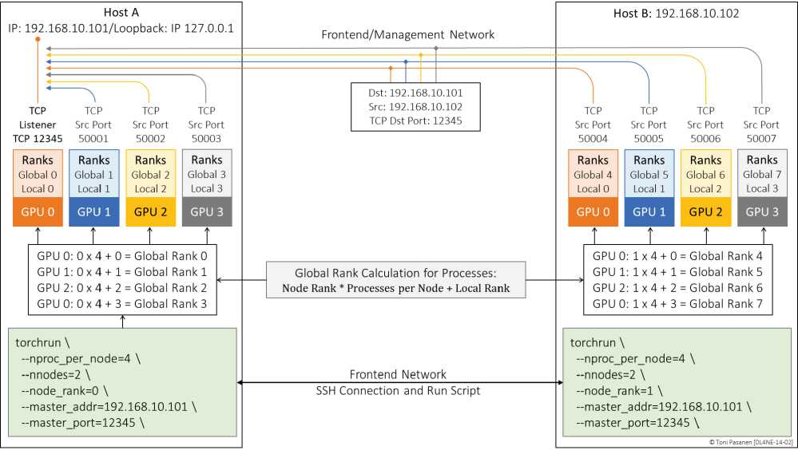
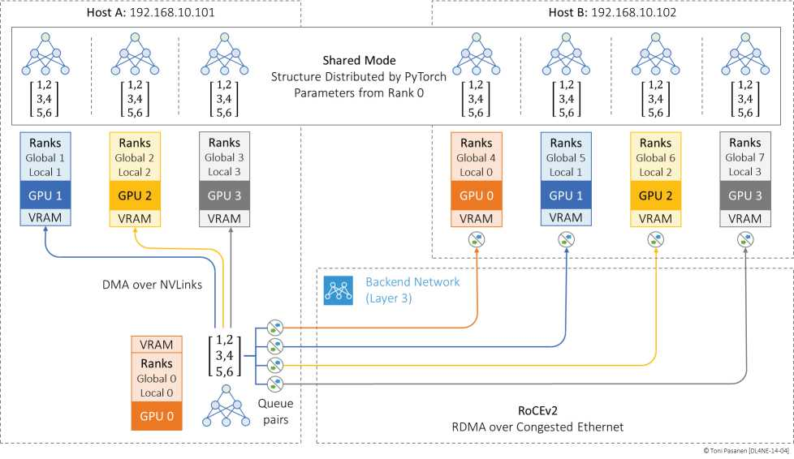

PyTorch（流程）+ CUDA（算）+ NCCL（通信）。训练启动先建 TCP 到 Master 拿 NCCL UniqueId，再建 GPU 间通信域。网工要放行 Master TCP 端口 + RoCE 数据面，这是 jobs 起不来的首查。
① 各 rank 连 Master 建 TCP；② Master 下发 UniqueId；③ 各 GPU 凭 Id 建 NCCL 通道 + 广播对齐参数。书 p329-332 时序图，超时多为防火墙/路由/端口错。
Rank0 参数广播全员，保证起点一致，再各自吃不同 micro-batch。起点不齐，后面 AllReduce 全错。


写出 jobs 启动三步 + 首查三项。